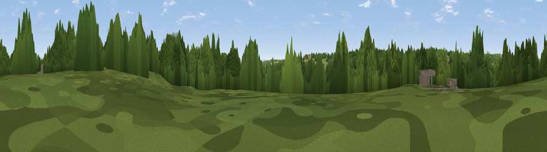

Rough Hill
#41449 in England · top 91% of its area beats it · near Astwood BankThe view, rendered

A 360° render of this exact spot computed from the terrain model, tree cover and land cover — summer colours, afternoon light, calibrated against photographs of famous viewpoints. Real trees, hedges and buildings will differ in detail.
The panorama
Grey silhouette: terrain skyline in each direction (720 bearings, Earth curvature and refraction included). Dashed green: skyline with trees (+15 m) and buildings (+8 m) as obstacles. Blue strip: how far the ground is visible on each bearing.
Where the view opens
Wedge length = distance to the farthest visible ground on that bearing (vegetation-aware). Rings at 10, 25 and 50 km.
What fills the view
53% woodland · 28% grassland · 10% cropland · 8% built-up
Angular shares of the visible panorama (visual magnitude), not map area. Landscape diversity 0.49 (0–1 Shannon).
Key numbers
More beautiful places nearby
The staircase of upgrades: each row has a higher view potential than everything closer. Driving times are estimates from straight-line distance, calibrated against real road routing — check an actual route before setting out.
| Place | Direction | Drive | Score |
|---|---|---|---|
| Viewpoint near Studley | ENE · 1 km | ~2 min | 38.5 |
| Viewpoint near Callow Hill | WNW · 2 km | ~6 min | 47.4 |
| Viewpoint near Redditch | NNW · 2 km | ~6 min | 48.5 |
| Viewpoint near Feckenham | WSW · 5 km | ~11 min | 49.7 |
| Viewpoint near Mappleborough Green | NE · 5 km | ~12 min | 57.0 |
| Round Hill | ESE · 6 km | ~13 min | 61.7 |
| Lodge Hill | ESE · 7 km | ~14 min | 64.0 |
| Rous Lench Hill | SSW · 11 km | ~21 min | 64.2 |
52.27530, -1.92713 · source: osm peak · position refined by local search. Computed location — check access rights before visiting.